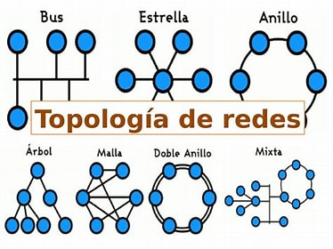

Componentes Fundamentales:
Dispositivos de Red: Los dispositivos como routers, switches, hubs y puntos de acceso inalámbrico forman la base física de una red, permitiendo la transferencia de datos entre diferentes puntos.
Protocolos de Comunicación: Los protocolos como TCP/IP, Ethernet, and Wi-Fi establecen las reglas y normas para la transmisión de datos dentro de una red, asegurando la compatibilidad y la fiabilidad en las comunicaciones.
Topologías de Red: La disposición física y lógica de los dispositivos de red define la topología de una red, que puede ser en forma de estrella, bus, anillo o malla, según los requisitos específicos de la aplicación.
Topologías de Red
La topología de red se refiere a la forma en que están interconectados los dispositivos en una red de computadoras. La topología de una red afecta directamente su rendimiento, confiabilidad y escalabilidad. Aquí tienes información sobre algunas de las topologías de red más comunes:
Topología de: estrella
Topologia de: bus
Topologia de:anillo
Topologia de:doble anillo
Topologia mixta
ect...

Seguridad en Redes
La seguridad en redes es un aspecto crítico en el mundo digital actual, donde la información sensible y los datos personales están constantemente en riesgo de ser comprometidos. Aquí tienes una visión general de algunos aspectos importantes de la seguridad en redes:
Firewalls: Los firewalls son dispositivos o programas diseñados para proteger una red al filtrar y controlar el tráfico de datos que entra y sale de ella. Pueden bloquear conexiones no autorizadas y prevenir intrusiones maliciosas.
Contacto
Acontinuacion encontraras como puede comunicarte conmigo: